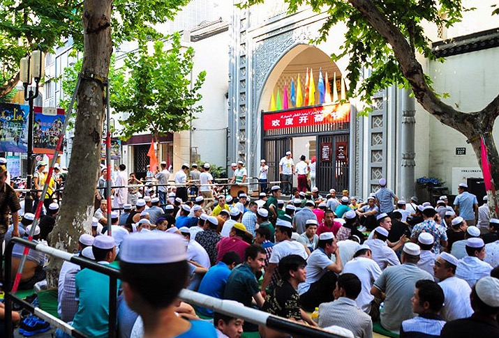
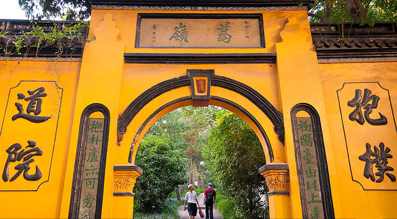
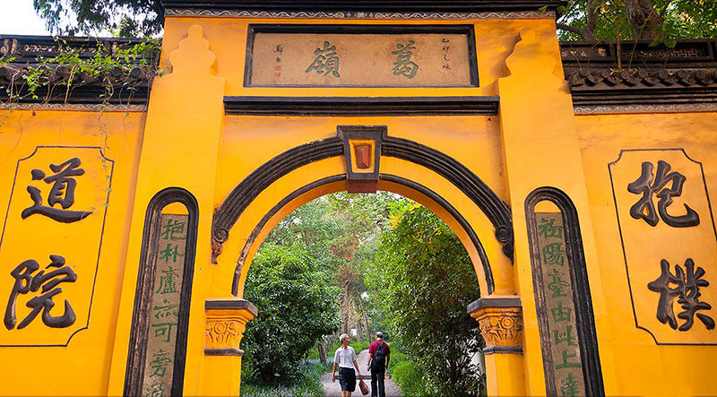

下面是会议的介绍和周边的介绍
杭州,宗教的绿洲
杭州是不同的宗教的朝圣地,如佛教、道教、伊斯兰教和基督教。这些修道院、寺庙、清真寺和教堂在生活上给予了杭州人民优秀的文化，以及宽容和虔诚的接受能力。
尽管中国已经信奉无神论许多个世纪了,杭州依然是不同的宗教的朝圣地,如佛教、道教、伊斯兰教和基督教。这些修道院、寺庙、清真寺和教堂在生活上给予了杭州人民优秀的文化，以及宽容和虔诚的接受能力。
杭州以佛教信仰的堡垒而著名,诸多寺庙就像公元二世纪强大的喜马拉雅山脉一样，野火一般的蔓延开来。由浙江临安人钱镠所创建的吴越国是一个集中的佛教领域。在钱镠的统治时期,外地的朝圣者沿着西湖的山脉、钱塘江繁衍开来,后者更是因为其每年农历8月的涌潮奇观而闻名。因为当时统治者们的倡导,源于印度的佛教很快发展成中国文化。禅道,在日本也称为禅宗,充分体现了深刻而微妙的佛教哲学。灵隐寺,是修养灵魂的修道院,也是在中国最大和最有影响力的禅道寺庙之一。在中国春节期间,当地居民会涌向这里,争先恐后的燃气寺院在新年里的第一支香,虽然价格昂贵，但人们认为“头香”的寓意是最好的。
灵隐寺在国家法定假日或周末时，并不是一个可以冷静沉思的好去处,因为届时将充满了来自国内外的游客,但它的确成功地展现了21世纪的僧侣生活的真实写照。如果你感兴趣的话,你可以留在这个修道院冥想、祈祷、或着只是寻求宁静状态。这些都是繁华的都市生活所欠缺的。
依据佛教的一个主要原则,欲望是所有痛苦的源泉,只有服从的崇高的八正道佛教才可以消除所有的痛苦。通过涅槃才能与这个世俗的现实或精神世界脱离开来。涅槃是一个摆脱痛苦和无尽轮回的卓越国度。
凤凰清真寺杭州有很多清真寺。在元朝时期(1271 - 1368年),蒙古人一统中国把一个东海波斯的沙漠变成一个奉行帝国主义的国家。随后元朝的建立引发了大规模的迁移,不仅在中国还有世界各地。许多来自穆斯林的皇室成员和士兵,以及来自中亚、阿拉伯半岛和埃及的穆斯林商人,都迁移和定居在杭州。今天,少数新疆的穆斯城市移民(在遥远的西北中国维吾尔族自治区),常常对凤凰清真寺进行朝圣和祈祷。可悲的是,由可汗在元朝搭建的壮丽的祷告大厅在近几十年来已经沦为废墟。一个新的、更低调的的祷告大厅已经建起,虔诚的穆斯林教徒可以继续朝着麦加进行祈祷。
 抱朴道观抱朴道观坐落在葛岭山腰,毫无疑问,这里是杭州最好的道教朝圣地。
它打破了常规,将道观隐藏在相对茂密的森林中,这使得它的纪念活动更加的安静,而不是过度招摇的崇敬。
 
